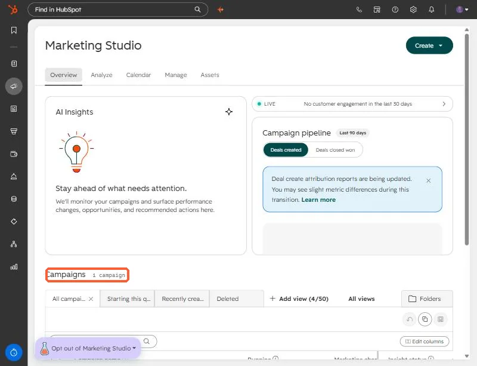
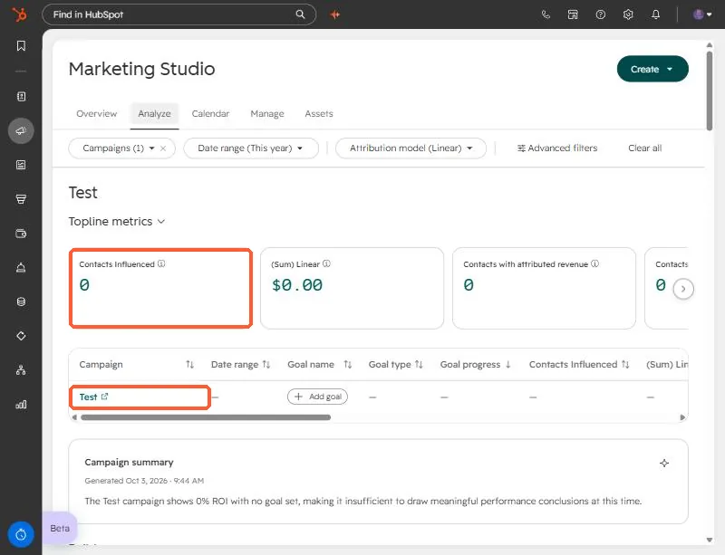
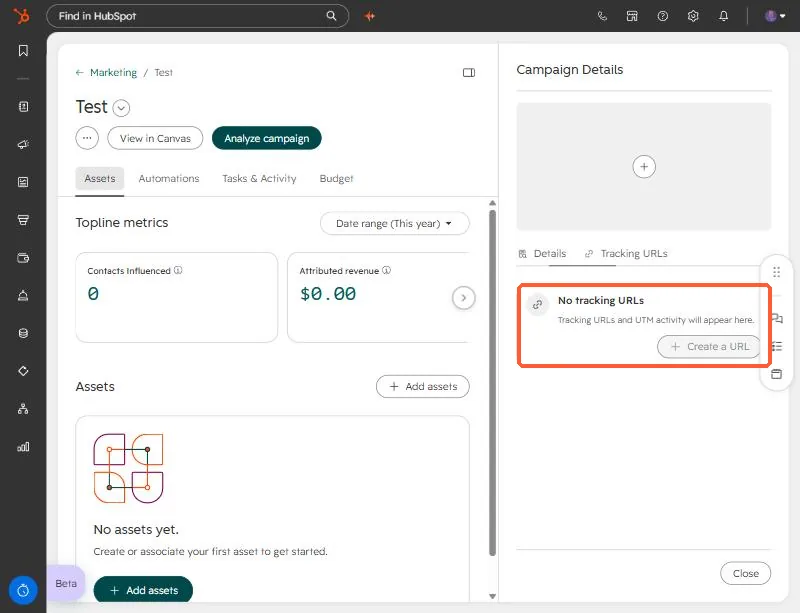

Short answer
Attaching assets to a campaign makes it a content library. Contacts who interact with those assets are counted as influenced, but sessions only appear when visits come in through a link carrying the campaign's UTM. If nobody uses a tracking URL, sessions stay at zero. For one campaign of mine, about 490 contacts were influenced and sessions were 0. After I built tracking URLs, the first session appeared.
1. Find the campaign
Open Campaigns. HubSpot's newer Marketing Studio lists them under Overview. This demo portal has one campaign.


2. Read the analytics honestly
On the Analyze tab, pick a campaign and read the topline metrics. In my real case the campaign showed hundreds of influenced contacts and no sessions. That combination is not a bug. Influence comes from contacts interacting with attached assets, such as forms and emails. Sessions come from visits.


3. Check the Tracking URLs tab
Open the campaign and use the Tracking URLs tab in the right panel. HubSpot's own wording when none exist: Tracking URLs and UTM activity will appear here.


4. Create tracking URLs and use them
- Create one tracking URL per link you will share: the email, the LinkedIn post, the ad.
- Choose this campaign as the UTM campaign so visits land under it.
- Set source and medium so channels stay separate in reports.
- Link to the highest performing asset in the campaign.
For my own campaign, the auto-generated campaign UTM had never been used. I built four ready-to-use links for the top assets. Once the first visit came through, sessions moved from 0 to 1, which confirmed the tagging worked.
The saved tracking URL list is not exposed through the CRM API I used, so to audit existing URLs, read them in the UI.